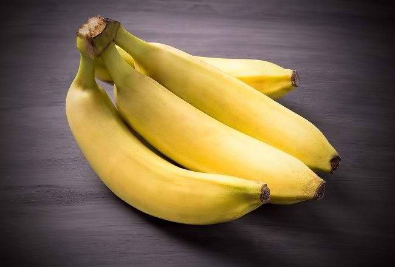
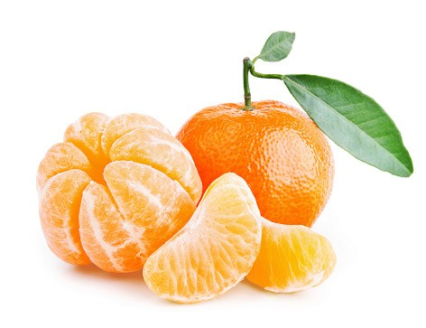

8 Macam Buah Dan Manfaatnya Untuk Kesehatan
Pisang
Dapat menurunkan resiko kanker, asma, menurunkan tekanan darah, meningkatkan kesehatan jantung, melancarkan peredaran darah, membantu pencernaan pada usus, menjaga kesehatan mata, dan menormalkan fungsi jantung.
Mangga

Dapat mengurangi dehidrasi dan memperlancar sirkulasi darah karena mengandung vitamin A, E, dan C, bertindak sebagai disinfektan, dapat membersihkan darah, dan mengobati beragam penyakit dan gangguan kesehatan lain seperti bau badan yang tidak sedap, dan menurunkan panas tubuh saat demam. Mangga juga mampu membantu dalam proses pengobatan penyakit kulit seperti bisul, borok, dan lain sebagainya.
Pepaya
Penting sekali bagi kesehatan, terutama untuk menguatkan sistem imun tubuh, karena mengandung vitamin C serta vitamin A yang diproduksi dalam tubuh untuk mencegah penyakit seperti infeksi, pilek, flu, dan meredakan demam. Pepaya juga dapat menyehatkan tulang, baik untuk penderita diabetes, mencegah penyakit jantung, sangat baik dalam melancarkan buang air besar dan mengatasi sembelit. Selain itu dapat mempercepat penyembuhan luka, pencegahan asma, dan mengurangi berat badan.
Strawberry
Mengandung provitamin A, vitamin B1, B, dan C, sebagai antioksidan untuk melawan zat radikal bebas, memiliki fungsi kesehatan lainnya seperti mengobati gangguan kesehatan pada kandung kemih, menjadi anti virus, dan menjadi anti kanker. Strawberry juga mencegah hipertensi, alergi, asma, juga dapat mengatur gula darah, melancarkan pencernaan, dan mengatasi stroke.
Jeruk
Buah jeruk mengandung vitamin A, B1, B2, dan C, sangat baik baik bagi tubuh karena selain menstimulasi sistem kekebalan tubuh, juga menghilangkan sumbatan lendir di tenggorokan, rongga hidung, paru-paru, dan perut. Berguna pula untuk membersihkan liver dan menghilangkan rasa sakit di tubuh akibat influenza. Campuran sari jeruk nipis dan madu sangat berkhasiat menyembuhkan radang tenggorokan dan amandel, mengandung anti kanker bagi tubuh, dapat mencegah dan mengobati beragam penyakit, dan gangguan kesehatan lain seperti mengobati sariawan dan menurunkan resiko terkena kardiovaskuler, kanker, dan katarak.
Nanas
Rasanya yang asam manis membuat nanas cocok untuk hidangan penutup setelah makan. Atau juga bisa dijadikan camilan sehat pada siang hari. Tak hanya rasanya yang enak, buah ini ternyata mengandung zat yang bersifat antiradang. Ini membantu Sobat Bethesda untuk menurunkan risiko penyakit infeksi. Nanas juga mengandung enzim bromelain. Enzim ini berpotensi membantu mempercepat proses penyembuhan luka. Bromelain juga merupakan agen antiradang yang bisa mengurangi bengkak serta memperbaiki lapisan organ yang rusak dengan lapisan yang baru.
Jambu Biji

Jambu biji sudah terkenal jadi salah satu buah sehat untuk pasien demam berdarah. Hal ini dikarenakan buah sehat ini bantu menaikkan kadar trombosit. Beberapa penelitian ternyata sudah membuktikan hal ini. Jambu biji mengandung polisakarida sulfat, flavonoid, quercetin dan senyawa chalcone alami. Senyawa ini bisa merangsang produksi trombosit sehingga baik bagi Sobat Bethesda yang sedang mengalami demam berdarah. Selain itu, kandungan vitamin C jambu biji sangat tinggi, yaitu sekitar 90 mg per 100 gram buah. Jadi, konsumsi 2 buah (kurang lebih 100 gram) jambu biji bisa memenuhi seluruh kebutuhan vitamin C harian Sobat Bethesda.
Alpukat

Alpukat adalah buah yang kaya asam lemak bernama asam oleat. Meskipun kaya lemak, lemak ini justru sehat untuk kesehatan Sobat Bethesda, bahkan membantu menurunkan kadar kolesterol jahat Sobat Bethesda. Selain itu, buah ini kaya akan vitamin E, lutein, dan zeaxanthin. Vitamin E bersifat antioksidan dan baik untuk menjaga kelembapan kulit. Sementara itu, lutein dan zeaxanthin baik untuk kesehatan mata sehingga menurunkan risiko penyakit mata, seperti degenerasi makula akibat usia dan katarak. Hal ini pun dipaparkan dalam jurnal terbitan Nutrients (2018). Kandungan lemak dan protein pada alpukat membantu Sobat Bethesda mengendalikan nafsu makan. Kedua zat gizi ini membantu meningkatkan hormon peptide YY dan menurunkan hormon ghrelin. Peptide YY membantu memunculkan sensasi kenyang, sementara hor